Linkリンク
Youtubeチャンネル |
メインの活動拠点です。歌ってみたやゲーム実況、語学学習、VR・メタバースなどが中心です |
|---|---|
| Youtubeチャンネル メンバー登録 |
Youtubeチャンネルのメンバー登録はこちらから行えます。 名前の横に経過日数によって成長するバッジ、コメントで使えるオリジナル絵文字、オリジナル待ち受け画面の配布（PC用・スマホ用／毎月）、限定配信（不定期）などの特典があります |
日本語学習用チャンネル |
海外の視聴者が多く日本語を教えてほしいという要望がとても多いため設立しました |
Twitch |
FPSゲームの練習や映画の同時視聴などの際にこちらで生放送をしています。Youtubeよりかなりまったりとやっています Amazonプライム会員の方は無料でサブスクライブができます。オリジナルバッジ、オリジナル絵文字、アーカイブの視聴等の特典があります。 |
| 生放送の告知や各種お知らせ、日常のつぶやきをしています | |
| ごくたまに更新しています。偽物のアカウントの方がフォロワー数が多いですがこちらが公式です | |
TikTok |
ごくたまに更新しています。偽物のアカウントの方がフォロワー数が多いですがこちらが公式です |
|  BOOTH |
公式グッズは主にこちらで販売しています |